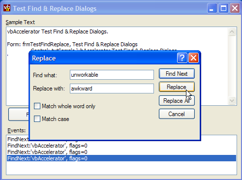

VB5 FindReplace Class and Sample (18K)
VB5 FindReplace Class and Sample (18K)
 VB6 FindReplace Class and Sample (17K)
VB6 FindReplace Class and Sample (17K)
 20 Jun 2003
20 Jun 2003
First Posted
 Win32 Hooks in VB - The vbAccelerator Hook Library
Win32 Hooks in VB - The vbAccelerator Hook Library
 Subclassing Without The Crashes
Subclassing Without The Crashes

Using the Find and Replace Common Dialogs
Reuse the standard Find/Replace dialogs in VB for that Notepad-style application feel...
VB has never provided direct support for the Find/Replace common dialogs. This may have been because these dialogs are non-modal, and it is more difficult to use these from an ActiveX control container, or that it is fairly simple to knock up your own Find/Replace form in VB without bothering with the ones provided by Windows. In any case, this sample provides a simple class and a module which enable you to use the dialogs direct from VB, although there is problem with Tab key handling in the dialogs.
Using The Code
To use the Find/Replace dialog code, first add a reference to the Subclassing and Timer Assistant and then add cFindReplace.cls and mFindReplaceHook.bas from the download to your project. Now you will be able to declare a WithEvents instance of the cFindReplace component to your code.
Private WithEvents m_cFR As cFindReplace
Private Sub Form_Load()
' Create instance of Find/Replace object
Set m_cFR = New cFindReplace
End Sub
Private Sub m_cFR_FindNext( _
ByVal sToFind As String, _
ByVal eFlags As EFindReplaceFlags _
)
' Fired when find button clicked
End Sub
Private Sub m_cFR_Replace( _
ByVal sToReplace As String, _
ByVal sReplaceWith As String, _
ByVal eFlags As EFindReplaceFlags _
)
' Fired when replace button clicked
End Sub
Private Sub m_cFR_ReplaceAll( _
ByVal sToReplace As String, _
ByVal sReplaceWith As String, _
ByVal eFlags As EFindReplaceFlags _
)
' Fired when replace all button clicked
End Sub
Private Sub m_cFR_ShowHelp()
' Fired if the help button clicked
End Sub
Now all you need to do is to show the dialog when needed and also to respond to the events. To show a Find dialog, call the VBFindText method, passing in the window handle of the form you want to own the dialog and optionally the initial text to display in the find box and options controlling the search. Likewise, to show the Replace dialog, call VBReplaceText, in which case you can also specify the initial text in the replace with text box as well as the text to find. You cannot display both the Find and Replace dialogs at the same time.
In responding to the events, you receive the text to find/replace and also flags specifying how to search. These flags are bit-fields and so you can determine if a particular option is selected using the And operator:
bSearchDown = ((eOptions And FR_DOWN) = FR_DOWN)
bWholeWord = ((eOptions And FR_WHOLEWORD) = FR_WHOLEWORD)
bMatchCase = ((eOptions And FR_MATCHCASE) = FR_MATCHCASE)
Finally, you can close an open dialog using the, erm, CloseDialog method. Dialogs are automatically closed if their owning form is unloaded.
About the Find/Replace Common Dialogs
The Find/Replace common dialogs are designed to be easily used with minimal effort from a C/C++ application. There is just one structure to initialise and then two API calls to make, one for Find and one for Replace. Whenever the user clicks one of the buttons, a notification is sent to the owning application in the form of a custom Window Message.
There are relatively few difficulties in converting the API over to VB (I further simplified life by using the Subclassing and Timer assistant to catch the messages. Here are the declares which provide access to the API:
Private Type FINDREPLACE
lStructSize As Long '// size of this struct 0x20
hWndOwner As Long '// handle to owner's window
hInstance As Long '// instance handle of.EXE that
'// contains cust. dlg. template
flags As Long '// one or more of the FR_?? flags
lpstrFindWhat As Long '// ptr. to search string
lpstrReplaceWith As Long '// ptr. to replace string
wFindWhatLen As Integer '// size of find buffer
wReplaceWithLen As Integer '// size of replace buffer
lCustData As Long '// data passed to hook fn.
lpfnHook As Long '// ptr. to hook fn. or NULL
lpTemplateName As Long '// custom template name
End Type
Private Declare Function FindTextA Lib "COMDLG32.DLL" ( _
tF As FINDREPLACE) As Long
Private Declare Function ReplaceTextA Lib "COMDLG32.DLL" ( _
tF As FINDREPLACE) As Long
Private Declare Function FindTextW Lib "COMDLG32.DLL" ( _
tF As FINDREPLACE) As Long
Private Declare Function ReplaceTextW Lib "COMDLG32.DLL" ( _
tF As FINDREPLACE) As Long
The FINDREPLACE structure uses a pointer to an area in memory to hold the find and replace strings. Although in theory you can use a pointer to a VB string to do this, I found it easier to manage an API buffer in memory and use a couple of helper functions called GetString and SetString, which in turn use the ubiquitous CopyMemory function and byte arrays to transfer the data to and from strings:
Private Declare Function LocalAlloc Lib "kernel32" ( _
ByVal wFlags As Long, ByVal wBytes As Long) As Long
Private Declare Function LocalFree Lib "kernel32" ( _
ByVal hMem As Long) As Long
Private Declare Function LocalLock Lib "kernel32" ( _
ByVal hMem As Long) As Long
Private Declare Function LocalUnlock Lib "kernel32" ( _
ByVal hMem As Long) As Long
Private Const GMEM_FIXED = &H0
Private Const GMEM_ZEROINIT = &H40
Private Const GPTR = (GMEM_FIXED Or GMEM_ZEROINIT)
Private Function GetString(ByVal lPtr As Long) As String
Dim sRet As String
If Not (lPtr = 0) Then
Dim b() As Byte
ReDim b(0 To m_lBuffLen - 1) As Byte
CopyMemory b(0), ByVal lPtr, m_lBuffLen
If IsNt Then
sRet = b
Else
sRet = StrConv(b, vbUnicode)
End If
Dim iPos As Long
iPos = InStr(sRet, vbNullChar)
If (iPos > 1) Then
GetString = Left(sRet, iPos - 1)
End If
End If
End Function
Private Sub SetString(ByVal lPtr As Long, ByVal sString As String)
If Not (lPtr = 0) Then
If (Len(sString) > 0) Then
Dim b() As Byte
If IsNt Then
If (Len(sString) > m_lBuffLen \ 2) Then
sString = Left(sString, m_lBuffLen \ 2)
End If
b = sString
Else
If (Len(sString) > m_lBuffLen) Then
sString = Left(sString, m_lBuffLen)
End If
b = StrConv(sString, vbFromUnicode)
End If
ReDim Preserve b(0 To m_lBuffLen) As Byte
CopyMemory ByVal lPtr, b(0), m_lBuffLen
End If
End If
End Sub
' To allocate memory:
hMem = LocalAlloc(GPTR, size)
lPtr = LocalLock(hMem)
' To set the string:
SetString lPtr, "vbAccelerator.com"
' To get the string
Debug.Print GetString(lPtr)
' Clear up resources:
LocalUnlock lPtr
LocalFree hMem
With this together its fairly simple to set up the FINDREPLACE structure and call the API functions.
A Problem
Whilst this is all workable enough, in practice there is a bigger problem. The Find and Replace dialogs are non-modal. ActiveX control containers have specific requirements on the implementation of non-modal dialogs around the handling of focus and the routing of key presses. Since VB forms are essentially implementations of ActiveX control containers this issue comes up when trying to use the Find and Replace dialogs.
If you run the sample code with any calls to the Attach method of the mFindReplaceHook module commented out, you'll see the effect of this. When the Find or Replace dialog is in focus hitting Return or Escape has no effect, and the Tab key causes the system to Beep.
Resolving this is tricky since you don't have any access to the ActiveX Container interfaces you might need to fix this from VB. The reason that the keys don't work correctly is that they are swallowed by the VB application rather than being directed to the dialog's message loop. What you want is to force VB to stop eating the keys and send the message; one way of doing this is to intercept all key presses using a Windows Hook, and to perform custom processing and then consume them.
This fixes the Return and Escape keys, however for some reason tabs are not being processed correctly. Whenever you hit tab, focus is always transferred to the first text box in the dialog. If anyone knows how to fix this it would be greatly appreciated.
Using a Keyboard Hook To Process Dialog Messages
Keyboard Hooks and the IDE
One unpleasant side effect of this techinque is that since VB debugs in the same process as the IDE, if the hook is installed then keys normally intended for the IDE (such as Ctrl-Break and other debugging keys) can end up being caught by the hook. This means that debugging becomes very difficult.
You can resolve this issue by either of the following techniques:
- Compile cFindReplace and mFindReplaceHook into an ActiveX DLL and use that instead.
- Prevent the code from attaching a hook at debug time by putting an IDE-only line of code into the Attach method.
The second method is the easiest. The code might look something like this:
Private m_bInIDE As Boolean
Private Property Get InIDE() As Boolean
Debug.Assert IsInIDE()
InIDE = m_bInIDE
End Property
Private Function IsInIDE() As Boolean
m_bInIDE = True
IsInIDE = m_bInIDE
End Function
...
Public Sub Attach(ByVal hWnd As Long)
If (InIDE) Then
Exit Sub
End If
...
End Sub
Conclusion
This article provides some short VB code which allows you to invoke the Common Dialog Find and Replace dialogs easily. However, there are problems integrating non-modal API dialogs with VB applications. This sample fixes most but there is still a tab key handling problem.